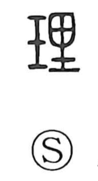

Explanation
理 combines 玉, jade, with 里 as its phonetic. Its concrete action is working and polishing jade so that the stone's natural markings emerge. The craftsman brings an existing pattern into view through careful treatment.
The same notion extends to putting things in order, adjusting them, and distinguishing their proper lines. Skin has a texture, 肌理; the earth has the courses and patterns of mountains and rivers, 地理. Human feelings and conduct likewise have an order expressed as 情理 and 道理.
理 therefore comes to name both the work of arranging and the structure made clear by that work. Its abstract meanings of principle, reason, and underlying order grow from the visible grain of a material. Later philosophy develops this order into the cosmic principle discussed alongside 気.